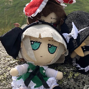
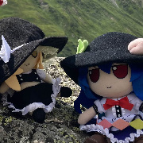

Sorter for Touhou Place members. Pick your sources, and hit the Start button.
Certain options have details that you can hover to read.
Click on the character you like better from the two, or tie them if you like them equally or don't know them.
Depending on how many sources you pick, you'll get up to 700+ picks, so set aside a good few cups of tea for this.
Keyboard controls during sorting: H/LeftArrow (pick left) J/DownArrow (undo) K/UpArrow (tie) L/RightArrow (pick right) S (save progress).
Before sorting: S/Enter (start sorting) L (load progress).
1/2/3 always correspond to the first/second/third buttons.
September 16th, 2026 - First Version.